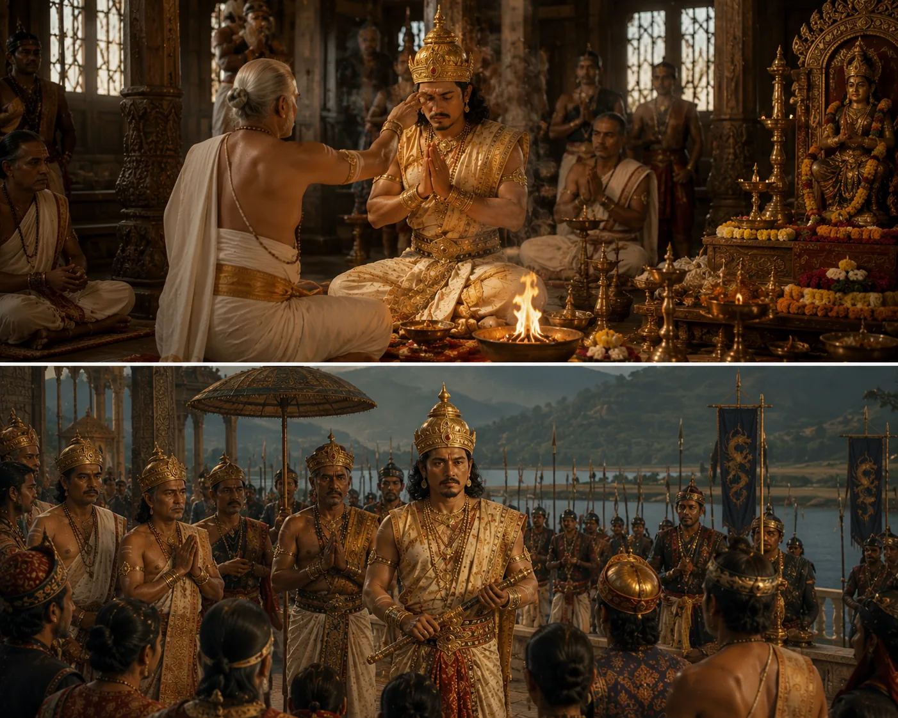

Adoption of Hindu Rituals in Sutamla's Court
c. 1650 · Against the Mughal Empire

Sutamla formalizes Hindu court rituals, patronizing Vaishnava monasteries and adopting Sanskrit titulature alongside Tai liturgy.
Sources have not yet been catalogued for this record.
People: Jayadhwaj Singha (Sutamla)